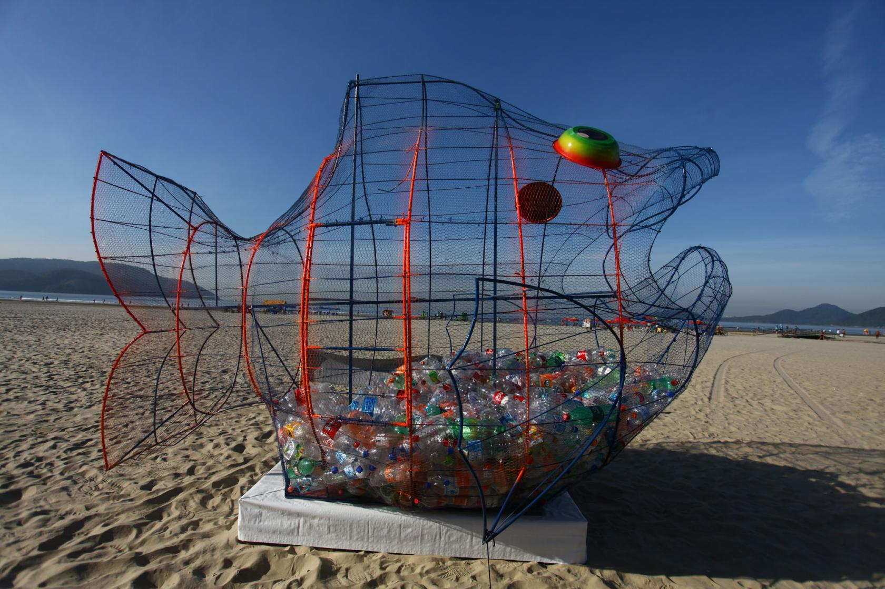
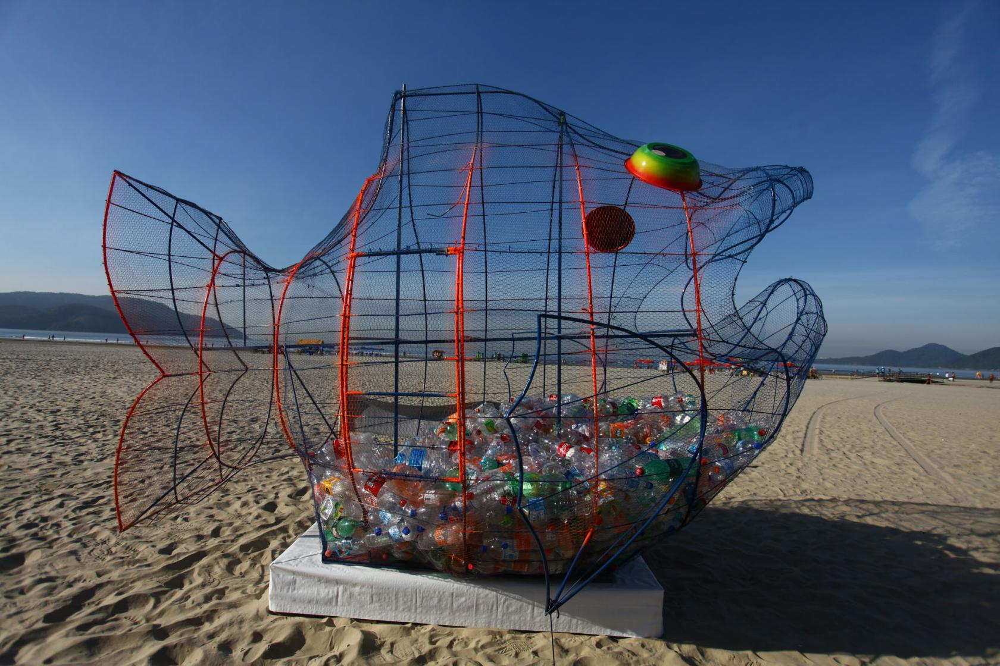
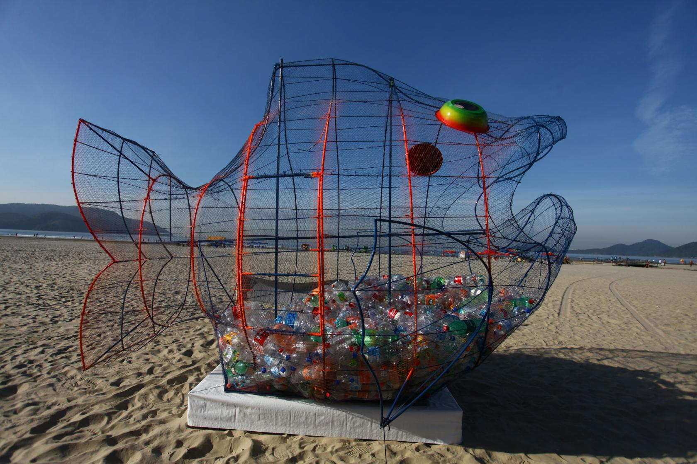
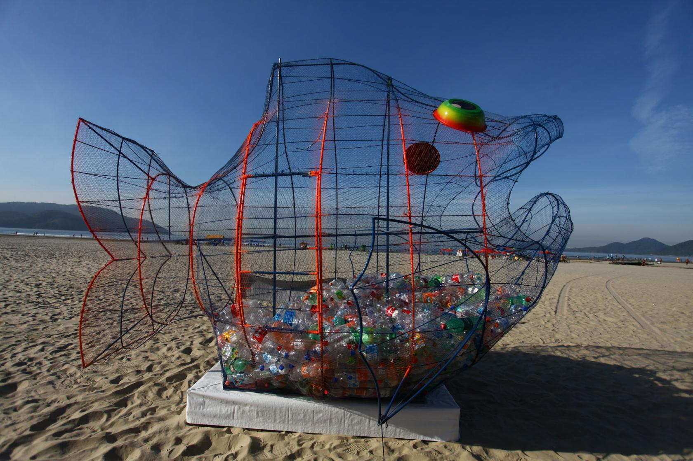

 

sustentabilidade refere-se ao princípio da busca pelo equilibrio entre a disponibilidade dos recursos naturais e a exploração deles por parte da sociedade. Ou seja, visa equilibrar a preservação do meio ambiente e o que ele pode oferecer em consonância com a qualidade de vida da população.
O termo sustentabilidade surge da necessidade de discussão a respeito da forma como a sociedade vem explorando e usando os recursos naturais, pensando em alternativas de preservá-lo evitando, assim, que esses recursos esgotem-se na natureza. A definição de sustentabilidade está atrelada ao conceito de desenvolvimento sustentável.
Atualmente, muito é comentado sobre desenvolvimento sustentável, visto o despertar de consciência da sociedade como um todo para a ideia de que os recursos naturais não são infinitos como muitos pensavam. As inúmeras discussões por parte da comunidade científica acerca das questões relacionadas ao meio ambiente e sua intensa degradação por parte da ação antrópica também colocaram esse termo em evidência.
Desenvolvimento sustentável refere-se ao desenvolvimento socioeconômico, político e cultural atrelado à preservação do meio ambiente. Sendo assim, as práticas capitalistas associadas ao consumo devem estar em equilíbrio com a sustentabilidade, visando aos avanços no campo social e econômico sem prejudicar a natureza. É a garantia do suprimento das necessidades da geração futura por meio da conservação dos recursos naturais.
Esse termo surgiu no relatório desenvolvido pela Comissão Mundial sobre o Meio Ambiente e o Desenvolvimento apresentado em 1987, conhecido como Relatório de Brundtland ou Nosso Futuro Comum. O relatório traz a definição de desenvolvimento sustentável como:
“O desenvolvimento que satisfaz as necessidades presentes, sem comprometer a capacidade das gerações futuras de suprir suas próprias necessidades.”
De acordo com o relatório, para que o desenvolvimento sustentável seja alcançado, é preciso primeiramente atender às necessidades básicas da sociedade, nos setores da saúde, educação, no que diz respeito à alimentação e moradia. E para isso, a Organização das Nações Unidas definiu, ao longo de inúmeras conferências ambientais, diversos objetivos a serem alcançados a fim de que os países consigam alcançar um desenvolvimento atrelado à sustentabilidade.
Em 2015, a ONU divulgou uma agenda em que consta dezessete objetivos a serem adotados pelos países até 2030 para que o desenvolvimento sustentável seja atingido.